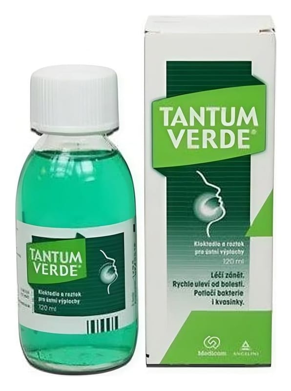

Tantum Verde % 0,15 120 ml Gargara

Ne için kullanılır
KT · Bölüm 1 TANTUM VERDE®, yangı önleyici ve ağrı kesici özelliklere sahip bir ajandır. Boğaz, ağız ve diş etlerinin enflamasyonuna (iltihap) bağlı ağrıyı yatıştırır. TANTUM VERDE®, 120 ml sıvı içeren, koyu renkli şişelerde sunulur. Berrak, yeşil renkli sıvı görünümündedir. Nane esanslıdır.
TANTUM VERDE®, Ağız ve boğazda ağrıyla seyreden diş eti iltihabı, ağızı, yutağı ve boğazı çevreleyen dokunun iltihabı, Hastanın yutma fonksiyonunun rahatlatılması ve diş eti rahatsızlıklarında gözlenen bulguların azaltılması ve Diş ve çevre dokuların cerrahi girişimlerden sonra ağrı ve iltihabı gidermek amacıyla kullanılır.